第 2 章 新世纪王码输⼊法
内容导读
本章主要介绍新世纪王码输⼊法基础知识、新世纪王码输⼊法编 码⽅法、新世纪王码编码优化⽅法和新世纪王码五键输⼊法四⼤⽅⾯ 的知识，是本书的重点章节。本章以新世纪王码输⼊法的基础知识为 始点，讲述了新世纪王码输⼊法的编码⽅法、编码优化⽅法，使读者 能顺利地使⽤最新的五笔字型输⼊法⸺新世纪王码输⼊法输⼊汉 字，提⾼汉字的输⼊速度，也为不愿记字根或很难记住字根的读者讲 解了“五笔跑步”输⼊法⸺“王码五键”输⼊法。
知识要点
▶ 新世纪王码输⼊法基础知识
▶ 新世纪王码输⼊法编码⽅法
▶ 新世纪王码编码优化⽅法
▶ “王码五键”输⼊法
2.1 新世纪王码输⼊法基础知识
五笔字型发明⼈王永⺠先⽣数⼗年如⼀⽇，潜⼼研究，⼜推出了五 笔字型的新世纪王码，也称为⼤⼀统王码。新版本取86及98版之优点， 对86版、98版有极⾼的兼容性，可以输⼊27533个汉字，平均每输⼊ 10000个字才有1~2个字需⼈⼯挑选。新世纪王码较以前的五笔字型新 增了25项创新功能，更具有科学性和实⽤性。
2.1.1 “区”的划分
新世纪王码与其他五笔字型⼀样，将键盘A~Y共25个键分为5 个区，分别⽤数字1、2、3、4、5代表，称为“区号”。每个区上都有 5个键。
1区:GFDSA
2区:HJKLM
3区:TREWQ
4区:YUIOP
5区:NBVCX
5个区的分布和每个区上各个键对应的英⽂字⺟如图2-1所示。

第26个键“Z”是在输⼊码元时⽤来代替不确定的码元，帮助⽤户 代替某些不知道码元的字根，通常称为“学习键”。
注明
- 新世纪王码改变了其他五笔输⼊法的规定，能⽤“Z”键代替 汉字编码的第⼀个码元。
- 在⽤“Z”键代替汉字编码的码元时，会在码元中将“Z”键 所在的位置⽤A~Y代替真实的码元，所组成的汉字会在选字框中列 出，供⽤户选字并学习编码⽅法。
- 在实际运⽤中，最多⽤“Z”键代替汉字编码的两个码元，不 然选字框出现的汉字太多，难以寻找要输⼊的汉字。
2.1.2 “区位” 和 “键位”
每个区中的各个键所处的位置叫“区位”，⽤⼀个两位数的代码来 表示。第⼀位为键所在的区号，第⼆位为键在各区中的位号(位号由键 盘中⼼向两边展开)，我们通常称“区位”的代码叫“区位码”。5个 区上各键的区位码分别如下。
1区:G(11)、F(12)、D(13)、S(14)、A(15)
2区:H(21)、J(22)、K(23)、L(24)、M(25)
3区:T(31)、R(32)、E(33)、W(34)、Q(35)
4区:Y(41)、U(42)、I(43)、O(44)、P(45)
5区:N(51)、B(52)、V(53)、C(54)、X(55)
区位上的英⽂字⺟叫做这个区位的“键位”，也称为“英⽂键名”。
“区位”和“键位”的示意图如图2-1所示。
2.1.3 键位的“中⽂键名”
五笔字型给25个键位都取了个中⽂名字，叫“中⽂键名”或“键 名”，是⽤平时使⽤频率很⾼的25个汉字命名的。5个区上各键的键名 分别如下。
1区:王(11)、⼟(12)、⼤(13)、⽊(14)、⼯(15)
2区:⽬(21)、⽇(22)、口(23)、⽥(24)、⼭(25)
3区:⽲(31)、⽩(32)、⽉(33)、⼈(34)、⾦(35)
4区:⾔(41)、⽴(42)、⽔(43)、⽕(44)、之(45)
5区:已(51)、⼦(52)、⼥(53)、⼜(54)、⺓(55)
各区的各个键位对应的键名如图2-2所示。

明显可以看出，1区的每⼀个键名的第⼀笔均为“横”画;2区的 每⼀个键名的第⼀笔均为“竖”画;3区的每⼀个键名的第⼀笔均为“撇” 画;4区除“⽔”以外的每⼀个键名的第⼀笔均为“捺”画;5区的每⼀ 个键名的第⼀笔均为“折”画。
所以称
1区⸺横区
2区⸺竖区
3区⸺撇区
4区⸺捺区
5区⸺折区
各区的特征如图 2-3 所示。

2.1.4 新世纪王码的字根总表和字根在键位上的分布
新世纪王码的汉字简体字根除5个单笔画以外，还有221个字根， 总共226个字根，⽐86王码少28个字根。字根总数少了，便于记忆和 操作，打字速度也会得到提⾼。
新世纪王码的汉字简体字根总表和字根在键盘上的分布如图2-4所
示。

图2-4的下⽅是新世纪王码的汉字简体字根的助记口诀，它以诗歌 的形式帮助⽤户记忆难记的字根分布。
新世纪王码的字根分汉字简体字根和繁体字根两种。繁体字根是为
繁体中⽂输⼊编制的，需要繁体输⼊的读者可以参阅图2-5。汉字繁体
的编码与输⼊⽅法与汉字简体是⼀样的。

注明
在键盘上，⼀区的11、12、13键位上分别有三个带圆圈的字根、 其他4个区中的前3个键位也都有这样的字根。圆圈有两 个含义，⼀是表示对应的笔画，如
表示两撇;另⼀个 含义是“识别码”。新世纪王码与其他五笔字型输⼊法⼀样也有识别 码，就是⽤这些带圆圈的字根来表示“识别码”。⽤带圆圈的字根来 形成识别码的速度⽐⽤86版王码快得多，这正是新世纪王码的新颖 之处。
图2-5的下⽅是新世纪王码的汉字繁体字根的助记口诀，与简体 字根助记口诀是⼀样的。
由于新世纪版王码与86王码、98王码同出⼀⻔，所以它们的汉字 编码⽅法和相关规定都是⼀样的。对⽤户⽽⾔，只不过是字根在键盘上 的位置不同和字根口诀不同⽽已。⽐如，对原来习惯⽤86版输⼊汉字的 ⽤户沿⽤86版汉字输⼊法，也可在新世纪版下正确输⼊80%以上的汉 字。新世纪版与86版相⽐较，除减少了28个码元(字根)外，还有13 个码元(字根)做了位移，码元(字根)助记口诀也作了⼤幅度的调整。 要把码元(字根)助记口诀和字根分布从86版改到新世纪版⽐较容易， 适应期不会超过⼀周。更重要的是，使⽤新世纪版输⼊汉字的速度要⽐ 使⽤86版快得多，操作也⽅便得多。
为了⽅便⽤户学习，我们将标准86王码字根键盘、字根记忆口决 和标准86版到新世纪版字根变动原因⽤图示的⽅法列出，读者在学习时 可参考⽐较。
标准86王码字根键盘如图2-6所示。

标准86王码字根记忆口诀如图2-7所示。

标准86版到新世纪版字根变动原因如图2-8所示。

2.1.5 新世纪王码的字根
- 键名字根
每个区位上的第⼀个字根就是“键名字根”，也就是2.1.3节中所 说的每个键位上的“中⽂键名” - 基本字根
每个键位上在字根记忆口诀中出现的字根叫“基本字根”，它们是 组成汉字的主要字根。
如
11区位上的王、五、一
12区位上的⼠、⼲、⼗、⼨、⾬
13区位上的⼤、古、⽯、⼚
14区位上的⽊、丁、⻄
15区位上的⼯、⼽、七 - 相似字根
有些字根与基本字根很相似或者渊源⼀致，称为“相似字根”。
如11区位上的、与“五”很相似，它们是“五”的相似字根。
12区位上的⼗与“⼨”很相似，它是“⼨”的相似字根。
13区位上的⼀、⼤与“⼚”很相似，它们是“⼚”的相似字根。
14区位上的⻄与“⻄”很相似，它是“⻄”的相似字根。
15区位上的七、、与“七”很相似，它们是“七”的相似字根。
在记忆字根时，千万别漏掉这些相似字根。 - 字根代码
字根处在哪个键上，这个键的区位码就是字根的代码。
如“王、五、⼀”等字根在1区的第1个键上，所以它们的字根代 码都是11;“⼤、古、⽯、⼚”等字根在1区的第3个键上，所以它们 的字根代码都是13。 - 字根键名
字根所在的英⽂键名叫字根键名。
如“王、五、⼀”等字根的字根键名都是G，“⼤、古、⽯、⼚” 21新世纪五笔字型输⼊法 等字根的字根键名都是D。
2.1.6 新世纪王码字根的分布特征
在五笔字型编码⽅案中，字根在键盘上的分布是有规律的，⼤部分 都可以在⾳、形、意上有相近的地⽅。概括起来，下⾯的⼀些分布特征 有助于字根的记忆。
-
⼤部分字根所在的 “区号” 与 “⾸笔代码” ⼀致
1) 横起笔的字根，“王⼟⼤⽊⼯”的⾸笔代号为1，在第1区。
2) 竖起笔的字根，“⽬⽇口⽥⼭”的⾸笔代号为2，在第2区。
3) 撒起笔的字根，“⽲⽩⽉⼈⾦”的⾸笔代号为3，在第3区。
4) 捺起笔的字根，“⾔⽴⽔⽕之”的⾸笔代号为4，在第4区。
5) 折起笔的字根，“已⼦⼥⼜⺓”的⾸笔代号为5，在第5区。
这⾥只是说⼤部分字根，也有少部分例外，如“⽔、⻋、⼒”等， 以字根口诀为准。 -
字根的位号与次笔代码基本⼀致
除了字根的第⼀笔画的代号与这个字根所在键盘分区的“区号”保 持⼀致外，相当⼀部分字根的第⼆笔代号与该字根所在键的区号的“位 号”也⼀致，如图2-9所示。
在这⾥要注意，字根的位号只是基本上与字根的次笔代码⼀致，也 有不少字根的位号不是这样的，如⽬、⽇、口、⽥、⽴、⽔、⽕等，也 要以字根口诀为准。
-
字根形态相似或渊源⼀致的相似字根
如G键上有与“王”相似的“五”字根，R键上有与“⼿”渊源⼀ 致的“扌”字根，其他示例如图2-10所示。
-
单笔画的 “个数” 与所在的 “位号” ⼀致
键位代码还表示了组成字根的单笔画的种类和笔画总数，即区号代 表字根的单笔画的种类，位号代表字根的笔画总数。
如横“⼀”的代号为1，在1区，那么11代表⼀横 ，12代表两
横
，12代表两
横 ，13代表三横三。
，13代表三横三。
竖“|”的代号为2，在2区，那么21代表⼀竖 ，22代表两竖
，22代表两竖 ，
23代表三竖
，
23代表三竖 ，24代表四竖
，24代表四竖 ，依次类推。
，依次类推。
这个规律对记忆横“⼀”、竖“丨”、撇“丿”、捺“、”、折“⼄” 的多笔画字根在键盘上的位置很有⽤处。多笔画字根在键盘上的位置如 图2-11所示。
-
个别例外的字根， 其编码需要硬性记住
例如:⻋、⼒、丁、⻄、⾅等。
这样，就把226个字根有规律地放在计算机键盘的25个区位上。 掌握了以上字根在键盘上的分布特征，整个字根的键位就⽐较容易记 忆了。
对于那些与键⾯上属于基本字根或同种类型的相似字根，⼀是依靠 口诀记忆，⼆是进⾏联想，三是使⽤练习软件加强记忆。要记住字根， 最重要的是要常做拆字练习，字拆多了，就可以牢固地记住各个字根所 在的键位。
2.1.7 新世纪王码字根解析
图2-4下⽅所示的是新世纪王码字根助记口诀，它把新世纪王码的
226 个字根中的绝⼤部分字根⽤助记口决的⽅式表述出来。
下⾯分区来讲解新世纪王码字根助记口决。
1 区：第⼀笔画是横起笔的字根集合
-
字根分布

-
键位

-
助记口诀
王旁⻘头五⼀提
⼟⼠⼆干⼗⼨⾬
⼤三肆头古石⼚
⽊丁⻄边要⽆⼥
⼯⼽草头右框七 - 字根解释
1) G键: 区位号11 字例:
字例:
 2) F键: 区位号12
2) F键: 区位号12
 字例:
字例:
 3) D键: 区位号13
3) D键: 区位号13
 字例:
字例:
 4) S键: 区位号 14
4) S键: 区位号 14
 字例:
字例:
 5) A键: 区位号15
5) A键: 区位号15
 字例:
字例:

- 简、繁字根总表

2 区：第⼀笔画是竖起笔的字根集合
- 字根分布

- 键位

- 助记口诀
⽬⽌具头⼘⻁⽪
⽇⽈两竖与⾍依
口中两川三个竖
⽥框四⻋甲单底
⼭由⻉⻣下框⾥ - 字根解释
1) H键:区位号21 字例:
字例:
 2) J键:区位号22
2) J键:区位号22
 字例:
字例:
 3) K键:区位号23
3) K键:区位号23
 字例:
字例:
 4) L键:区位号24
4) L键:区位号24
 字例:
字例:
 5) M键:区位号25
5) M键:区位号25
 字例:
字例:

注意 “朵”字的上半部分“⼏”虽不属“下框⼌”(“⼏”本应在三区 的W键上，以后会知道原因，它叫做“⻛头⼏”)，但考虑到⽤户理 解上的偏差，“朵”的上半部分和“机”的右半部分也可⽤“下框⼌” 容错表示。不过，“⻛”的外围部分不能⽤“下框⻔”表示。
- 简、繁字根总表

3 区：第⼀笔画是撇起笔的字根集合
- 字根分布

- 键位

- 助记口诀
⽲⽵⽜旁卧⼈⽴
⽩⽄⽓头叉⼿提
⽉⾈⾐⼒豕（shǐ）⾘臼
⼈⼋登祭⻛头⼏
⾦夕⺨⼉包头⻥ - 字根解释
1) T键:区位号31 字例:
字例:

注意
“夂” “攵”也没在口诀中，它们都以“丿”开头，所以放在撇 区的第⼀个键上。“⼡”指的是“条”字的上半部分;“攵”指的是“牧” 字的右半部分，“处”字的半包围部分。2) R键:区位号32
 字例:
字例:
 3) E键:区位号33
3) E键:区位号33
 字例:
字例:
 4) W键:区位号34
4) W键:区位号34

注意
“亻”没在口决中，理解为“单⼈旁”是“⼈”的相似字根。字例:
 5) Q键:区位号35
5) Q键:区位号35
 字例:
字例:

- 简、繁字根总表

4 区：第⼀笔画是捺起笔的字根集合
- 字根分布

- 键位

- 助记口诀
⾔⽂⽅点在四一
⽴带两点病⻔⾥
⽔边⼀族三点⼩
⽕变三态⼴⼆⽶
之字宝盖补示⾐ - 字根解释
1) Y键:区位号41 字例:
字例:
 2) U键:区位号42
2) U键:区位号42
 字例:
字例:
 3) I键:区位号43
3) I键:区位号43
 字例:
字例:
 4) O键:区位号44
4) O键:区位号44
 字例:
字例:
 5) P键:区位号45
5) P键:区位号45

注明
 和
和 ⽤⽅框框住，表示“礻”“衤”是“
⽤⽅框框住，表示“礻”“衤”是“ ”，⽽并⾮是真正
的“礻”、“衤”。要打出“礻”“衤”，还要分别补打“、”（区位码41）和
“
”，⽽并⾮是真正
的“礻”、“衤”。要打出“礻”“衤”，还要分别补打“、”（区位码41）和
“ ”（区位码42）
”（区位码42）字例:

- 简、繁字根总表

5 区：第⼀笔画是折起笔的字根集合
- 字根分布

- 键位

- 助记口决
已类左框⼼⼫⽻
⼦⽿了也乃⻮底
⼥⼑九巡录⽆⽔
⼜巴甬矣⻢失蹄
⺓⺟绞丝⼸三⼔ - 字根解释
1) N键:区位号51 字例:
字例:
 2) B键:区位号52
2) B键:区位号52
 字例:
字例:
 3) V键:区位号53
3) V键:区位号53
 字例:
字例:
 4) C键:区位号54
4) C键:区位号54
 字例:
字例:
 5) X键:区位号55
5) X键:区位号55
 字例
字例

- 简、繁字根总表

2.1.8 补码
在新世纪王码中有3个“补码”，分别是 、、，外围都有⼀
圆⻆⽅框。
、、，外围都有⼀
圆⻆⽅框。
它们作为字根参与编码时，要编两个码，规则是“主码(即码元所
在键位) + 补码(规定取该码元最后的笔画结构)”。

2.1.9 新世纪王码信息综合
新世纪王码的简体和繁体码元， 以及相关综合信息如图 2-12 所示。

注意
- 码元就是字根， ⼀般在 86版王码中叫字根， 在98版王码和 新世纪王码中叫码元。
- 码元列中最后的相隔码元是繁体字独有的码元。
2.1.10 新世纪王码简体字根键位图（高清版）
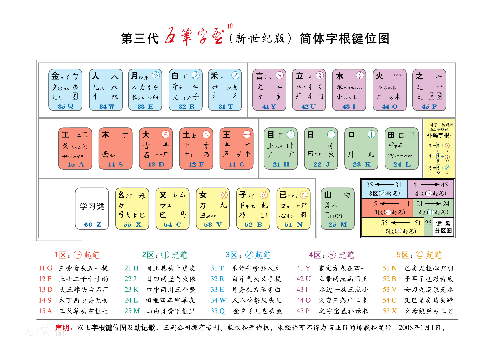
2.2 新世纪王码输⼊法编码⽅法
2.2.1 新世纪王码汉字拆分原则
⽤五笔字型输⼊汉字，⾸先要将汉字拆分成单个码元。新世纪王码 与86版、98版五笔字型具有相同的汉字拆分原则，也是遵循⼈们的书 写习惯，按顺序以码元为基本单位组成汉字编码，每个汉字的编码最多 为4个。汉字的拆分原则可归纳成5句话、20个字:
1. 书写顺序
将汉字拆成单个码元时，应与汉字的书写顺序相⼀致，但⼀些特殊 情况除外，如汉字“围”。 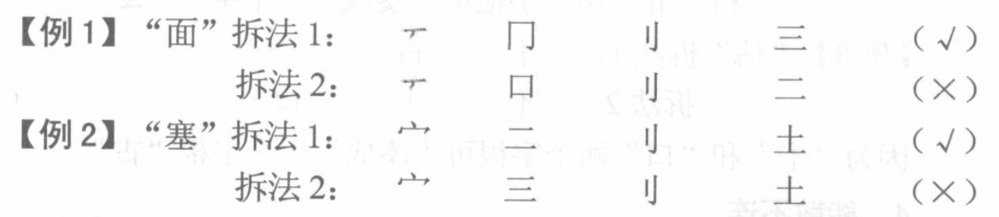 以上每个字的拆法2都违背了⼈们习惯的汉字笔画的书写顺序。
2. 兼顾直观
使拆得的码元有较好的直观性，可便于联想记忆，给输⼊带来⽅便。 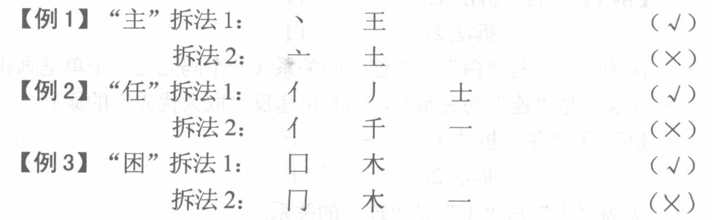 以上每个字的拆法2都不能直观地表述汉字的结构，与⼈们对字的 表述习惯相悖。⽐如若要告诉别⼈“主”字是如何写的，⼀定会直观明 了地说“主”字是由“⼀点”和其下⾯“⼀个王”构成，⽽不是⽤其他 ⽅式表述。
3. 取⼤优先
拆分出来的码元的笔画数⽬要尽量多，也就是拆分出的码元个数要 尽量少，这就是“⼤”。⾄于什么才算“⼤”，“⼤”到什么程度才是 边，要以“凑成”码元总表中“笔画最多，⼜符合字根特征”的基本笔 画结构为准。 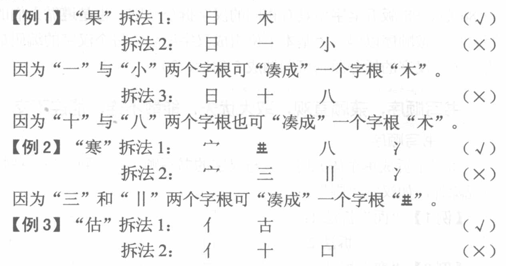 因为“⼗”和“口”两个字根可“凑成”⼀个字根“古” 。
4. 能散不连
能拆分成“散”结构关系的码元，就不要拆分成有相“连”关系的 码元。 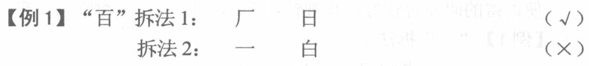 因为“一”与“⽩”是“连”的关系(⼀个码元与⼀个单笔画相连 构成的汉字是“连”的关系)，同时也违反“取⼤优先”的原则。 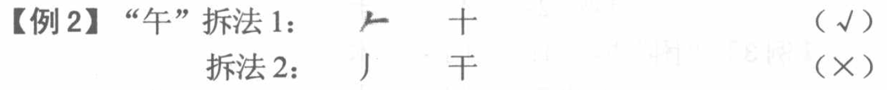 因为“丿”与“⼲”是“连”的关系。 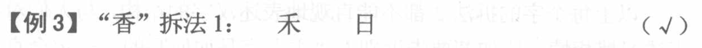 因为“丿”与“⽊”是“连”的关系。
注意
对本身就是“连”关系的字，不需要考虑“能散不连”的拆分原 则。
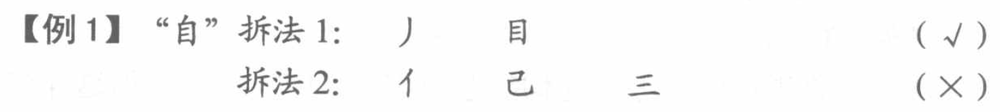 因为“⾃”本身就是“连”的关系。 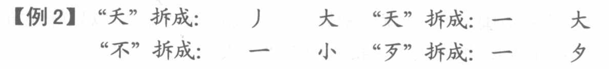 以上例⼦都是将本身就是“连”关系的字拆成“⼀个单笔画和另⼀ 个字根”，⽽不需遵循“能散不连”的拆分原则。
5. 能连不交
能拆分成相“连”关系的码元，就不要拆分成相“交”关系的码
元。
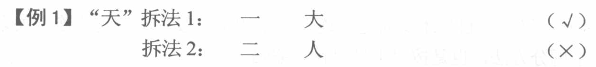
因为“⼆”与“⼈”是相“交”的关系，“⼀”与“⼤”才是相“连”
的关系。
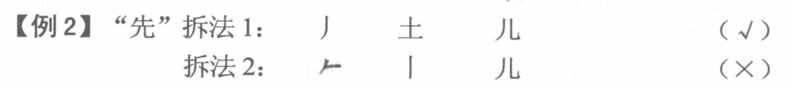
因为“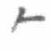”与“|”是相“交”的关系，“丿”与“⼟”才是相“连”
的关系。
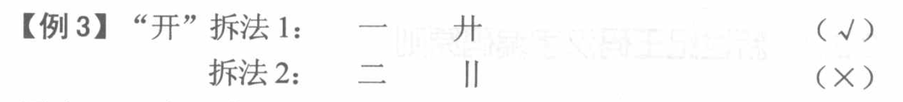
因为“⼆”与“||”是相“交”的关系，“⼀”与“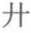”才是相“连”
的关系。
总之，拆字时应当兼顾上述5个⽅⾯的要求。⼀般来说，⾸先应当
保证每次拆出最⼤的基本码元，在拆出码数⽬相等的条件下，“散”⽐
“连”优先，“连”⽐“交”优先。
6. 例外情况
注意：下面的例外情况举的例子似乎有问题，参考一下就好。
在确认字根时，为了使字根特征明显易辨，有较好的“兼顾直观”
性且符合⼈们的习惯，必要时就得牺牲“书写顺序、取⼤优先、能散不
连、能连不交”的原则，⽽以“兼顾直观”为原则，形成例外情况。
【例1】“国”字
按“书写顺序”，其字根本应是“⻔”“王”、“、”，但这样编码有
悖于“国”字的字源。什么是“国”?国要有疆界，⼈⼈口中有粮吃，
安居乐业才成国。“口”就是疆界，“⽟”就是粮⻝，所以只好违背“书
写顺序”原则，把“国”字按“口”、“王”、“、”编码。
【例2】“⾃”字
按“取⼤优先”的原则，编码本应为“”、“⼄”、“三”，
但这样编码有悖于“⾃”字的字源。什么是“⾃”?“⾃”就是⼀个
⼿指指着⿐⼦，所以“⾃”拆成“丿”、“⽬”。这⾥的“丿”就是⼀个
⼿指，“⽬”就是⿐⼦。为了“兼顾直观”，牺牲了“取⼤优先”的原
则。
另外，“⾃”本身就是“连”关系的字，按其本身是“连”关系的
字拆分⽅法，也是按“丿”、“⽬”编码。
【例3】“戋”字
按“取⼤优先”编码为“二”、“七”、“、”，按“兼顾直观”编码
为“⼀”、“⼽”。
显然，后者的编码更符合⼈们对“戋”字“⼀横加⼀个⼽”的习
惯理解，所以“戋”字的正确编码为“⼀”、“⼽”。
2.2.2 新世纪王码汉字编码原则
汉字编码⽅法指的是码元形成的规定或过程，并且汉字的编码最多 为4码。汉字的编码原则可归纳成6句话、24个字。
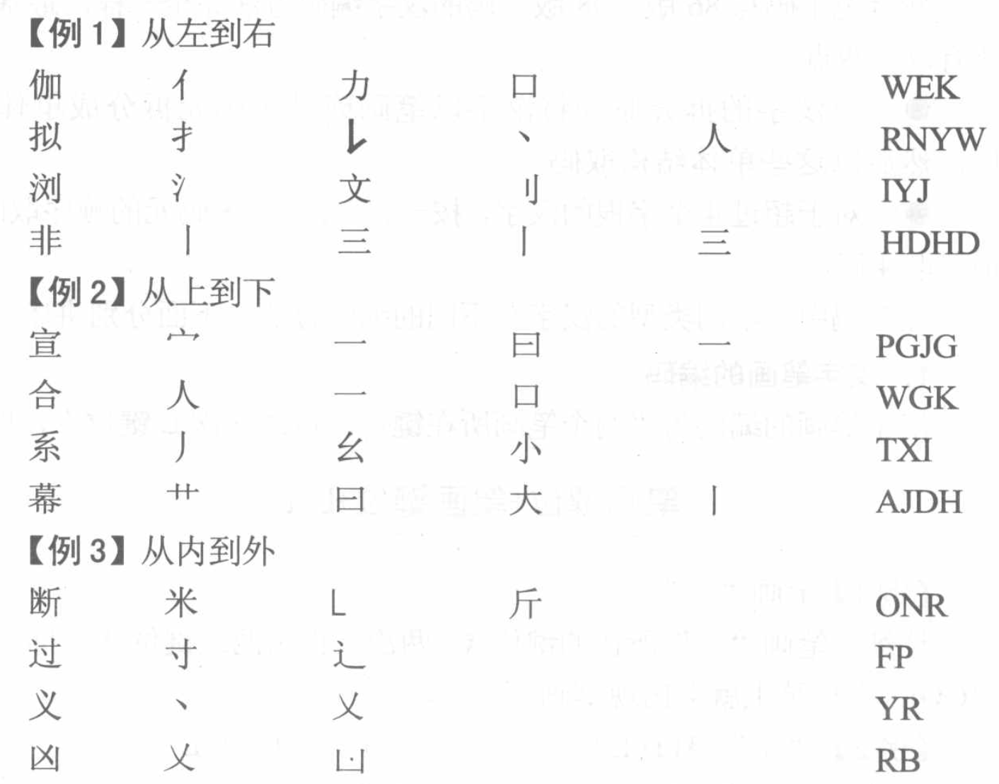
在这⾥特别要注意，“从内到外”并不是绝对的，对许多包围型或 半包围型的汉字，在拆分字根的时候，并不是依照“从内到外”的原则， ⽽是依照“从外到内”的原则。 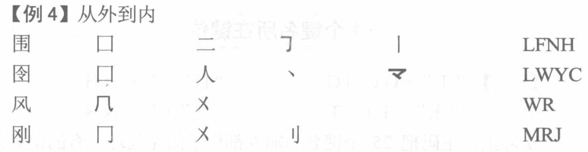 对包围型或半包围型的汉字，才有“从内到外”、“从外到内”的 考虑。究竟是“从内到外”还是“从外到内”，由⼈们的书写习惯所决 定，这也正是汉字编码原则的6句话中的第⼀句“书写习惯”的真正含 义。
2.2.3 新世纪王码汉字编码⽅法
新世纪王码与86版、98版王码的汉字编码⽅法完全⼀样，最基本 的有以下两点:
- 以汉字的拆分原则将汉字笔画或基本元拆分成单体结 构，然后以这些单体结构取码。
- 对于超过4个字根的汉字，按⼀、⼆、三、末码元的顺序取码， 最多取4码。
在王码中，不同类型的汉字有不同的编码⽅法，下⾯分别讲述。
1. 汉字笔画的编码
汉字笔画的编码为“两个笔画所在键位，再加两次L键位”，即
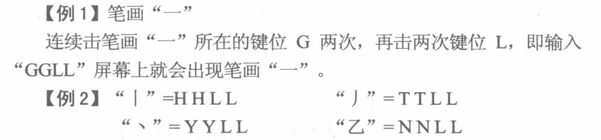
2. 汉字键名的编码
汉字键名的编码为
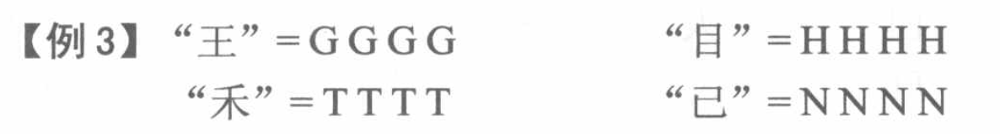 实际上，王码把25个键名的输⼊都作了简化处理，有的键名并不 需真正击键4次，只需击键2次或3次就可打出。
3. 成字码元的编码
成字码元就是键⾯上已成为汉字的码元，⼜称为键⾯字。⼀切成字 码元的输⼊，都可以⽤⼀个公式来表示，即:
“报户口”指的是成字码元所在键位。
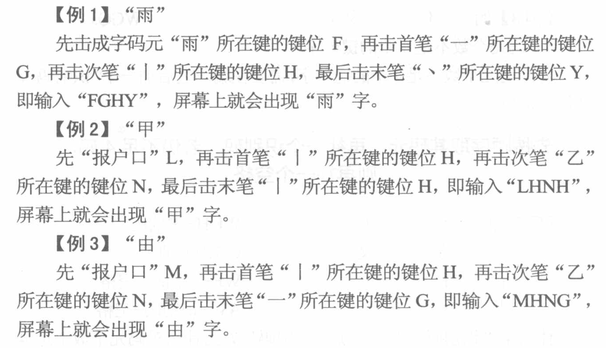
4. 键外字的编码
键外字指键⾯上没有的字，即除键名汉字和成字码元汉字之外的所有 汉字，分3种⽅法输⼊。
1) 码元个数超过4个的键字
编码⽅法为
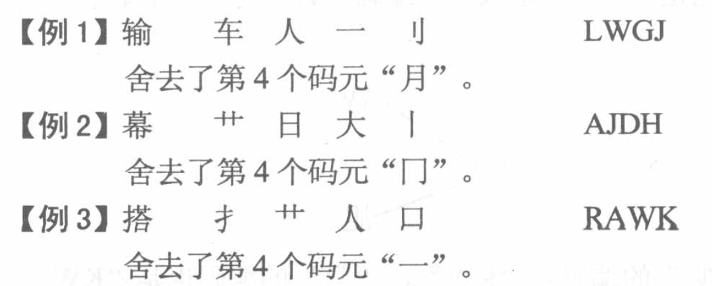
2) 码元个数刚好为4个的键字
编码⽅法为
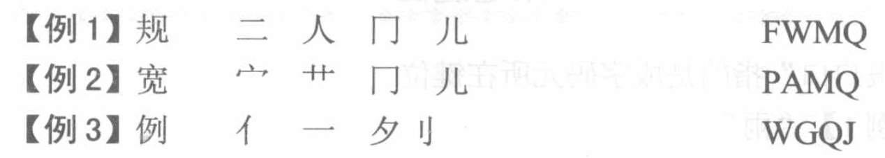
3) 码元个数不⾜4个的键外字
对于码元个数不⾜4个的键字，需要在编码之后加⼀个“识别码”，具体⽅法为。
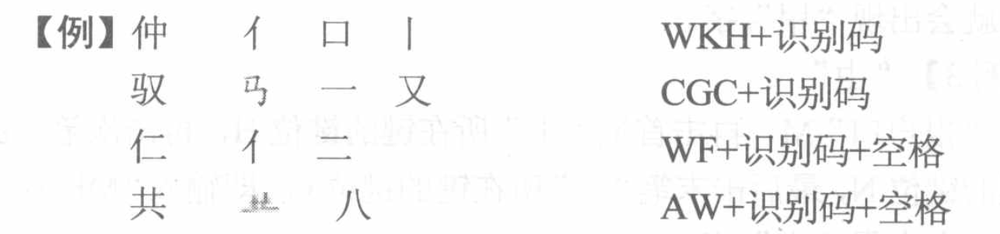
什么是“识别码”?怎么加“识别码”?为什么对码元个数不⾜4 个的键外字要补加⼀个识别码?这些问题在下⼀节中会详细讲述。
2.2.4 新世纪王码的末笔画代码
1. 汉字的重码
什么是汉字的重码?在五笔字型汉字编码中，“旭”的编码是“VJ”，
“旮”的编码也是“VJ”，造成⼀个编码“VJ”对应两个单字“旭”和
“旮”，即:
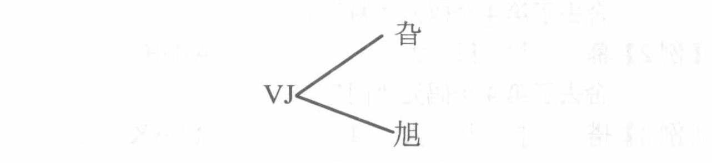
同样，“叭”的编码是“KW”，“只”的编码也是“KW”，也
造成⼀个编码“KW”对应两个单字“叭”和“只”，即:
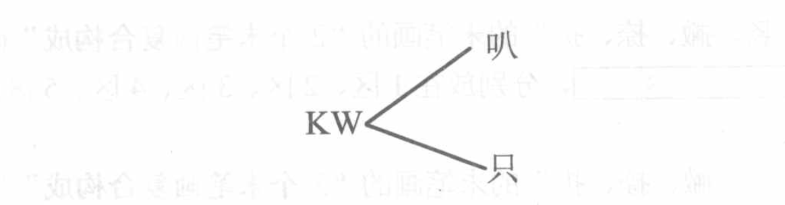
如果⼀个汉字编码对应两个或两个以上的汉字，这个汉字编码就叫
对应汉字的重码。
重码产⽣的原因是当汉字编码个数较少时，由于信息量不⾜，很难
做到⼀码对⼀字。要提⾼汉字输⼊法的输⼊速度，做到“盲打”，就必
须减少重码。减少重码是汉字输⼊法最关键的技术和难题。五笔字型输
⼊法是⽬前汉字输⼊法中重码最少的输⼊法，特别是新世纪王码，平均
每输⼊10000个汉字，仅有1~2个字需要⼈⼯挑选。
2. 解决重码的办法
王码⽤末笔字型识别码来解决汉字的重码问题。对于不⾜4码的汉
字，⽤补加末笔字型识别码来增加汉字编码的数量，编码个数多了，⾃
然重码的⼏率也就会少得多了。
在王码中，86版的末笔字型的识别码产⽣⽅法与98版王码和新世
纪王码的产⽣⽅法不⼀样，86版是以“末笔画交叉识别码”的⽅法;98
版王码和新世纪王码是以“末笔画代码”的⽅法。王码的识别码技术从
“末笔画交叉识别码技术”转到“末笔画代码技术”是王码输⼊法的⼀
项重⼤技术突破，它使王码输⼊法的输⼊速度⼤⼤提⾼，并且操作上简
单多了。本书只介绍98版或新世纪王码的末笔画代码。
3. 新世纪王码的末笔画代码
(1) “末笔画复合构成”码元的概念
新世纪王码的末笔画代码是
由“末笔画复合构成”码元转换⽽来的。“末笔画复合构成”码元是新
世纪王码提出的⼀个新概念，⼀共有3种。
新世纪王码规定，“横、竖、撇、捺、折”的末笔画的“⼀个末笔
画复合构成”码元分别为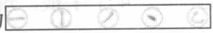
并按照“横、竖、撇、
捺、折”笔画码元在键盘上的放置规律放置，即如2.1.6节中的图2-11
所示，分别放在1区、2区、3区、4区、5区的第1个键位上。
横、竖、撇、捺、折”的末笔画的“2个末笔画复合构成”码元分
别为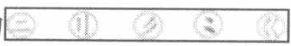，分别放在1区、2区、3区、4区、5区的第2
个键位上。
横、竖、撇、捺、折”的末笔画的“3个末笔画复合构成”码元分
别为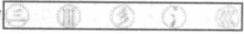，分别放在1区、2区、3区、4区、5区的第3
个键位上。
这样就形成了3种15个“末笔画复合构成”码元，它们分别在5
个区的前3个键位上，如图2-13所示。
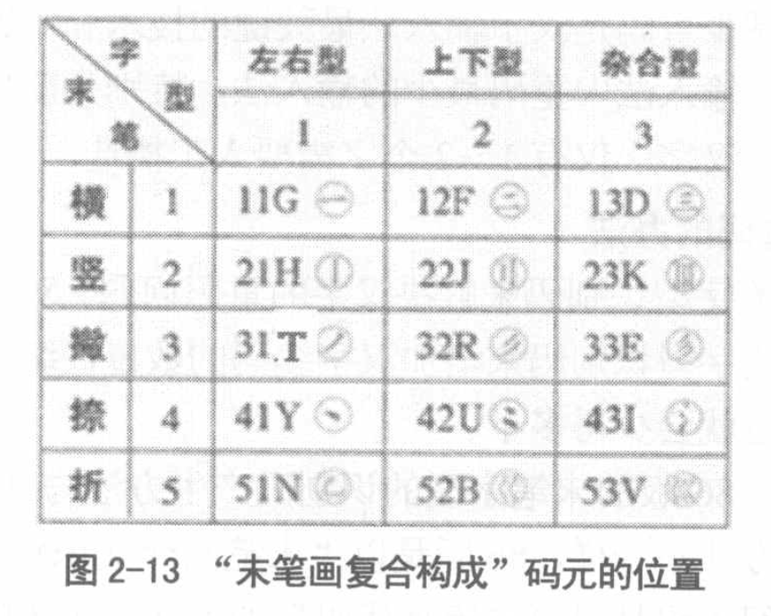
这正是为什么新世纪王码的码元总表或键盘上有⼀些笔画码元是⽤加
圆圈来标识的原因，它们表示“末笔画复合构成”码元，以后会知道，“识
别码”就是这15个“末笔画复合构成”码元。
(2) 有关末笔的规定
1) 对于带“⾛之”及带“⽅框”的包围型字体，它们的末笔规定
为被包围部分的末画。
【例如】“进”的末笔为丨(竖)
“国”的末笔为丶(捺)
2) 对于“九、⼒、七、⼔”4个字根，规定⽤笔画“折”作为它们
的末笔。
3) 类似“我、戋、成、⻰、饿、浅”等字的末笔，规定⽤笔画“丶”
作为它们的末笔。
注明
在86版王码中，类似“我、戋、成、⻰、饿、浅”等字的末笔 是“丿”，⽽不是“、”
(3) 末笔画代码
新世纪王码形成末笔画代码所花的时间不到86王码形成末笔画识
别码所⽤时间的50%。确定识别码的速度决定着打字的速度，⾃然新世
纪王码的输⼊速度就⽐86王码的输⼊速度要快得多。
新世纪王码末笔画代码是针对码元少于4个的汉字设计的。对于码
元⼤于或等于4个的汉字，不需要考虑末笔画代码问题。
对不同字型的汉字，新世纪王码规定了不同的末笔画代码。
所有码元不⾜4码的左右型汉字的末笔画代码均为“1个末笔画复
合构成”码元。
所有码元不⾜4码的上下型汉字的末笔画代码均为“两个末笔画复
合构成”码元。
所有码元不⾜4码的杂合型汉字的末笔画代码均为“3个末笔画复
合构成”码元。
左右型汉字的末笔画代码
对码元不⾜4码的左右型汉字，输⼊完码元后补打⼀个末笔画所对
应的“1个末笔画复合构成”码元作为末笔画代码。
【例如】

上下型汉字的末笔画代码
对码元不⾜4码的上下型汉字，输⼊完码元后补打⼀个末笔画所对
应的“两个末笔画复合构成”码元作为末笔画代码。
【例如】
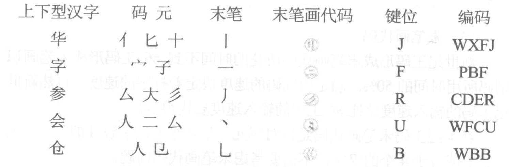
杂合型汉字的末笔画代码
对杂合型的汉字，输⼊完码元后补打“3个末笔画复合构成”码元
作为末笔画代码。
【例如】
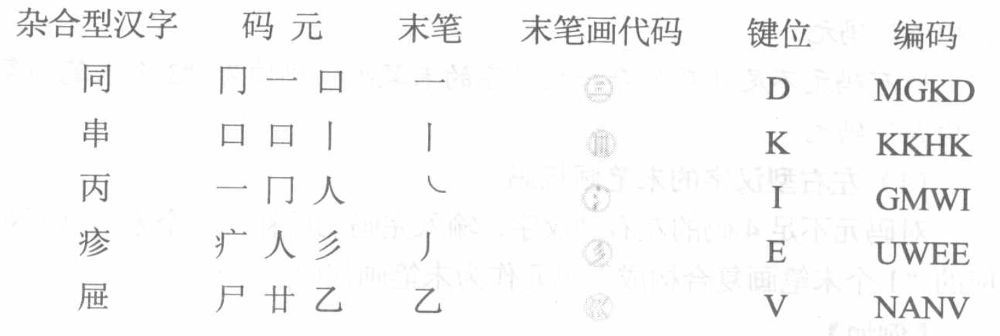
实际输⼊时只需击打圈中笔画键。外带圆圈是为了突出“末笔画复
合结构”，以示与真正的笔画相区分。
新世纪王码末笔画代码的形成可⽤以下过程表示:
“字型→末笔画→“末笔画复合构成”码元→“末笔画复合构成”
码元所在键位”
⽤王永⺠先⽣的话来说，“末笔画代码就是取这个字的笔画的最
后⼀笔”，这种描述简单明了，易辨易取，确实是新世纪王码的精华
之处。
⼀起练
码元少于4个的汉字“把、反、务、⾎、备、吧、⾢、叹、吗、杜、 杆”的编码如下。 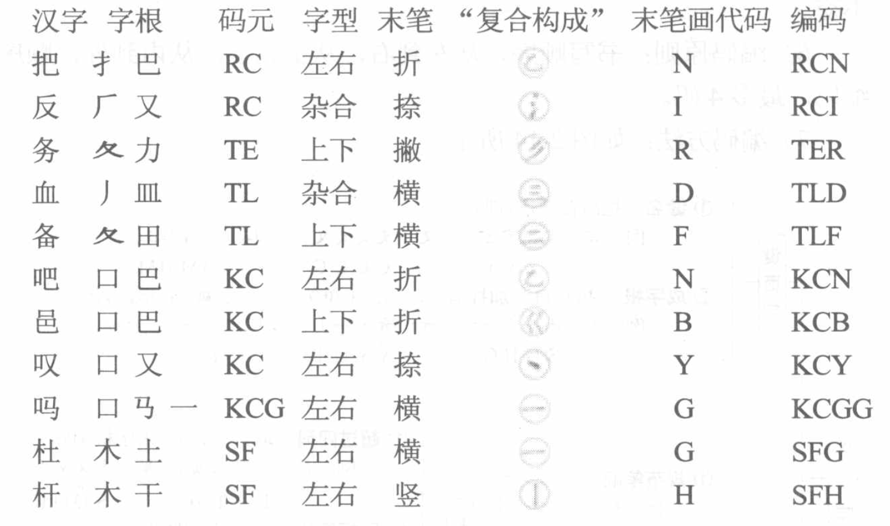
2.2.5 新世纪王码编码⼩结
笔画
汉字有“一、丨、丿、丶、乙”5种笔画。
层次
汉字有“笔画、字根、汉字”3个层次。
五笔字型键盘的5个区:
1区:G(11)、F(12)、D(13)、S(14)、A(15)
2区:H(21)、J(22)、K(23)、L(24)、M(25)
3区:T(31)、R(32)、E(33)、W(34)、Q(35)
4区:Y(41)、U(42)、I(43)、O(44)、P(45)
5区:N(51)、B(52)、V(53)、C(54)、X(55)
键位的中⽂键名:
1区:王、⼟、⼤、⽊、⼯
2区:⽬、⽇、口、⽥、⼭
3区:⽲、⽩、⽉、⼈、⾦
4区:⾔、⽴、⽔、⽕、之
5区:已、⼦、⼥、⼜、纟
拆字原则
书写顺序、兼顾直观、取⼤优先、能散不连、能连不交。
编码原则
书写顺序，从左到右，从上到下，从内到外，顺序编码，最多4码。
编码⽅法
如图2-14所示。 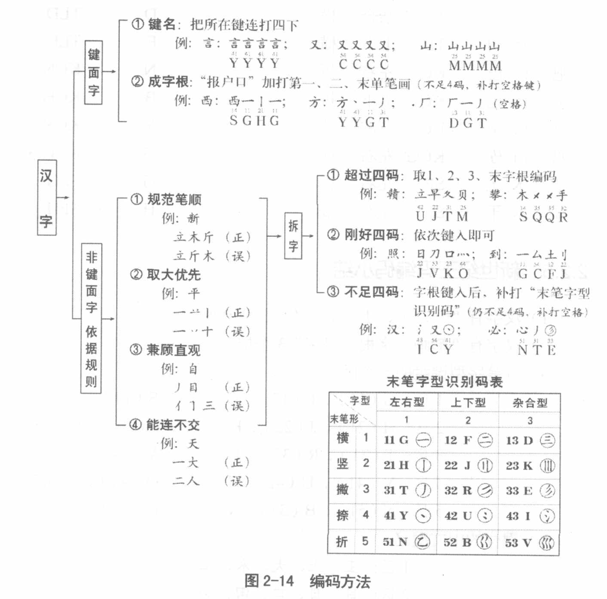
“末笔画复合结构”码元
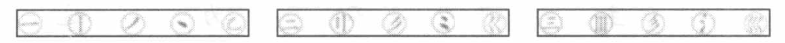
末笔画代码形成⽅法
字型→末笔画→“末笔画复合构成”码元→末笔画码元所在键位
2.3 新世纪王码编码优化⽅法
⽆论是哪种王码输⼊法，对⼀些常⽤的字都做了简化输⼊处理。 除按它们的全码可以输⼊外，多数都还可以只取其最前的⼀⾄三个码 元，再加空格键输⼊之，形成所谓⼀、⼆、三级简码，从⽽提⾼了输 ⼊速度。
2.3.1 简码
对所有的简码，新世纪王码在选字框中都做了标示。在输⼊过程中 如果选字框中有些字的后⾯带“*”号，就说明这样的字是简码字。 【例如】“军”的编码有⼆级简码，当输⼊到“PL”时，“军”就 出现在选字框的第⼀⾏，并在后⾯带个“*”号。此时，不必打最后⼀个 字根“J”，只要按⼀下空格键，“军”字就上屏幕了。 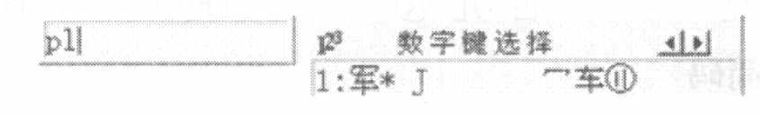
1.⼀级简码
在5个区的25个位上，每键都安排了⼀个使⽤频度很⾼的汉字， 组成了25个⼀级简码，这些字也称为⾼频字，⼀级简码如下所示。 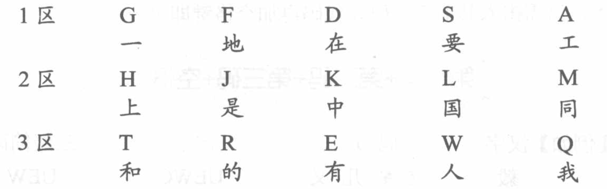 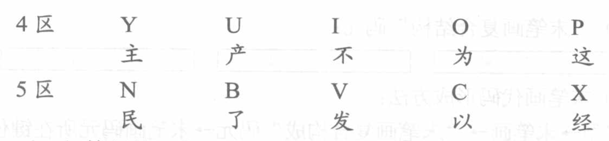 对⼀级简码的汉字，只要单击⼀下汉字所在的键，再单击空格键即 可将其输⼊到屏幕上。
2.⼆级简码
⼆级简码由单字的前两个元组成。理论上有25×25=625个⼆级简 码，但因为有19个空位，实际上只有606个。⼆级简码的输⼊只需击⼊ 该字的前两个码元代码再加上空格键即可。
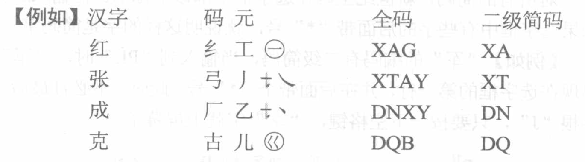
3.三级简码
三级简码由单字的前三个码元组成。理论上有25×25×25=15625个 三级简码，但因为有许多空位，实际上并没有这么多。如果⼀个字的前 3个码元在整个编码体系中是唯⼀的，⼀般都选为三级简码，此类汉字 的输⼊，只需击⼊其前3个码元代码再加空格键即可。
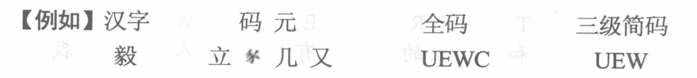
2.3.2 容错码
有的汉字从元上来看，既可以这样拆，也可以那样拆，但原则上
只有⼀种拆法是正确的。
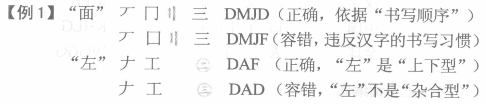
为了避免由于理解上的错误编码，王码有“容错”的功能，通常⽤
“容错码”来解决“理解上的错误编码”的问题。“容错码”的涵义就
是“容易”编错，但“容许”按错编码。
如果按“容错码”输⼊，新世纪王码就会在选字框中⾃动提示出正
确的编码。（但是在“微信输入法”的新世纪五笔中没有这个功能）
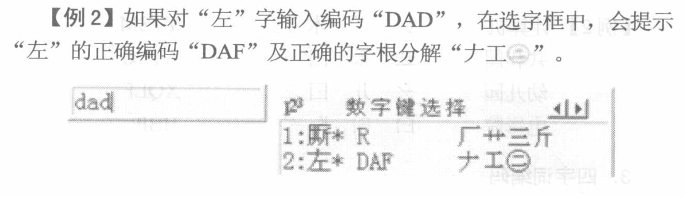
2.3.3 词组输⼊⽅法
五笔字型的三个版本，不⽤换档或其他附加操作，在字⺟键上打4
个键(既能打单字，⼜能打词汇)，就可在字词之间随意输⼊，这叫做
“字词兼容”，是五笔字型输⼊法的特⾊之⼀。在输⼊词汇时，也⼀律
只取4码，⽽且单字和词汇可以混合输⼊。
词组的编码⽅法如下。
1. ⼆字词编码
⼆字词分别取两个字的全码中的前两个码元代码，共由4码组成，

2. 三字词编码
三字词取前两个字的第⼀码元和最后⼀个字的前两个码元，共由4 码组成。即
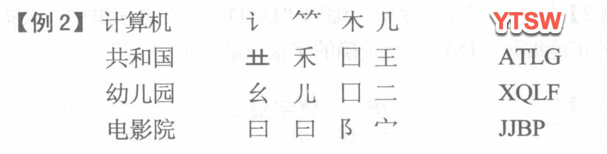
3. 四字词编码
四字词取每字的第⼀码元，共4码组成，即
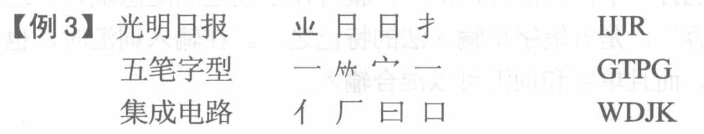
4. 多字词编码
多字词取第⼀、⼆、三及最末⼀个字的第⼀码元，共由4码组成， 即
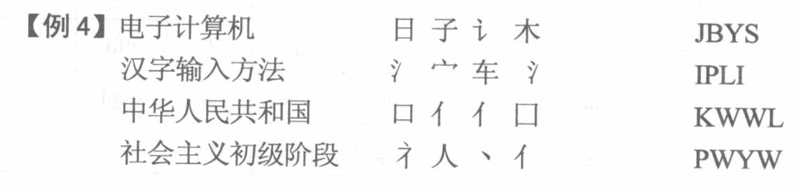
微信输入法对这个功能支持不好。
2.3.4 提⾼五笔字型输⼊速度的⽅法
在⽤五笔字型打字时，⾸先要准确地对不同类型的字和词⽤不同的
编码⽅法编码。有键名汉字编码、成字字根汉字编码、键外字汉字编码、
词组汉字编码和普通汉字编码。在普通汉字中⼜有⼀级简码、⼆级简码、
三级简码，有要输⼊末笔画代码和不输⼊末笔画代码等多种情况。其次，
使⽤者应充分发挥五笔字型对汉字编码的优化功能，尽量多⽤简码输⼊
⽅法，使每个字的平均码数尽量减少。此外，能⽤词组输⼊时尽量⽤词
组输⼊。这样，就可提⾼汉字输⼊速度。
对各类汉字取码优先级的顺序为
2.3.5 新世纪王码与标准86 王码难字编码对照表
为了⽅便读者学习新世纪王码，这⾥将⼀些⽐较难打的汉字编制成 了新世纪王码和标准86王码难字编码示例对照表，供读者在做拆字练习 时参考，⻅表2-1。 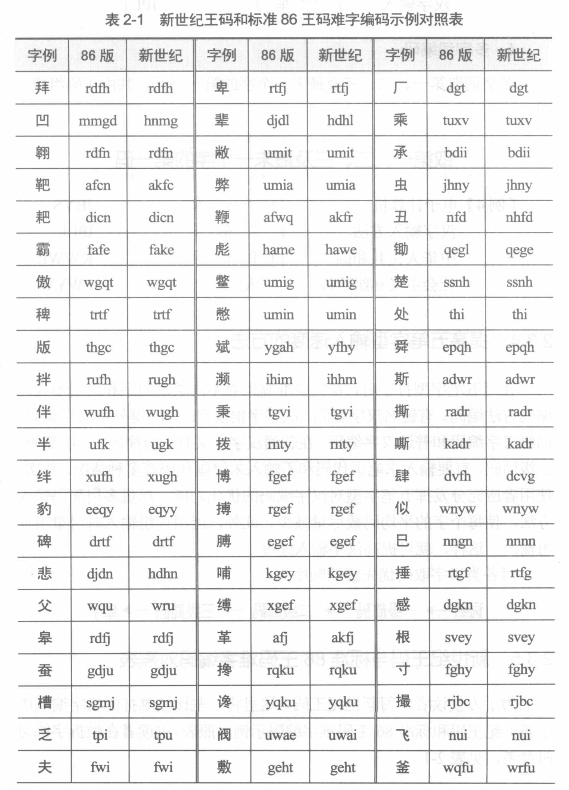 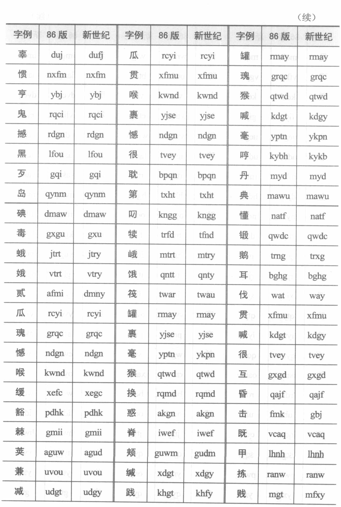 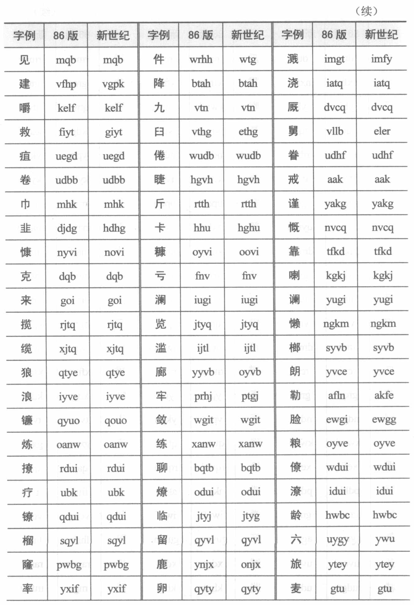 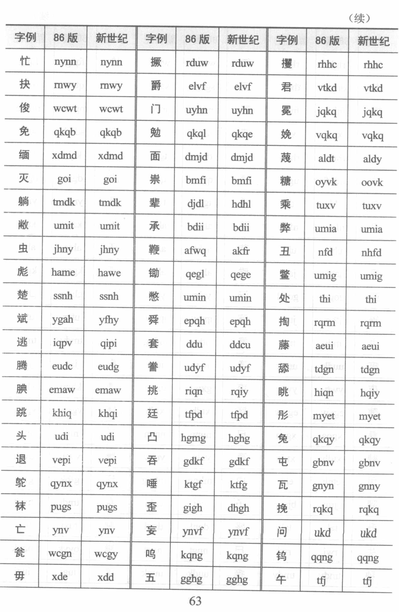 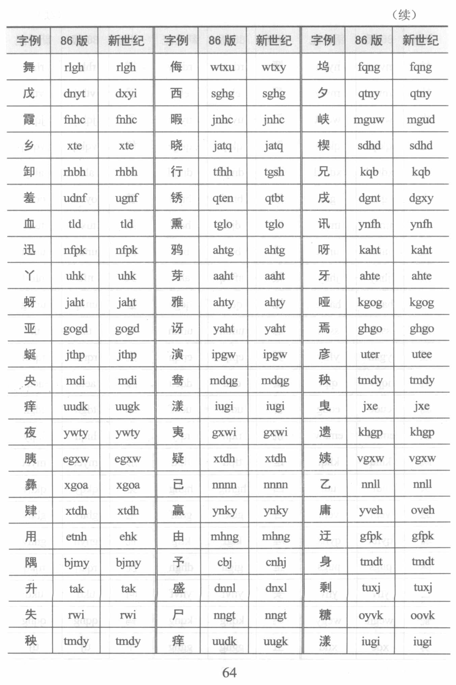 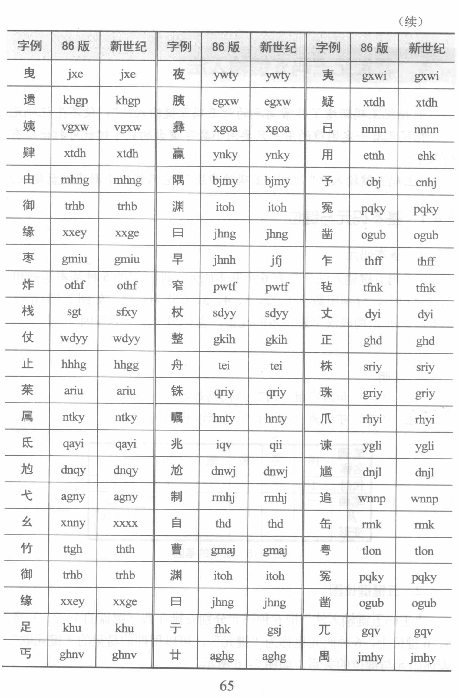